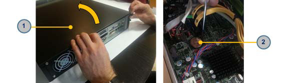

Removal of the Battery (Server).
-
Remove the server.
-
Move the server to a dust-free environment.
-
Remove the two screws, which are fixing the top cover to
the chassis (see item 1 in Figure
1).
-
Lift up the cover.
-
Remove the battery (see item 2 in Figure 1)
from the motherboard.
Figure 1. Battery
replacement

- 1
- Top cover
- 2
- Battery